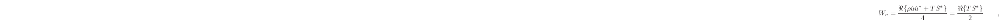
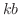
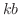

Next: Tamara Smyth Up: Miller Puckette Previous: Other Modal Measurement Techniques
We now describe an algorithm for finding modes in multichannel datasets. The algorithm is intended to be maximally application-agnostic: no calibration, no a priori knowledge about the system, no precooked bases. Also, while this algorithm has not yet been implemented for realtime operation, it has been designed with this in mind. Of all the techniques for modal decomposition that have been described above, this algorithm bears the most similarity to DMD. However, the discovery that methods of this kind were even considered worthwhile came as a shock, after much of the development and testing had already occurred. Ultimately, it has been inspiring and encouraging to know that the pursuit is not a misguided waste of time.
This technique, like DMD and the PDE technique described in section 1.7, constructs a companion matrix, , which multiplies the current audio block to predict what the next incoming sample will be on each input. Like both the PDE and DMD method, the matrix is largely a shifting submatrix, which is fed by a prediction submatrix. However, this method treats the data points from all locations on the surface as equally valid predictors of each new sample. This differs from both the PDE technique and from DMD, which make assessments of the (possibly many) channels as independent time series, only later finding eigenvectors that relate them. As a result, this technique leverages the many spatial samples in making a regression analysis, in addition to the time series.
Furthermore, this algorithm differs from DMD because it is a multirate process. The DMD behaves similarly to a DFT, where it is applied on a single block of data. This causes limitations in temporal accuracy, particularly if one wanted to calculate the residual, which would consist of the forcing function and noise. The proposed technique does not have these limitations.
For example, let  be an incoming matrix of data. This is a real-valued matrix with
be an incoming matrix of data. This is a real-valued matrix with  rows and columns, where is the number of spatial measurement points, and
rows and columns, where is the number of spatial measurement points, and  is the length in samples of the largest timescale we care to look at, momentarily. Each column vector in
is the length in samples of the largest timescale we care to look at, momentarily. Each column vector in  is a time series that progresses downward, so the last element in
is a time series that progresses downward, so the last element in  is the most recent value observed at a given position. Each column vector in
is the most recent value observed at a given position. Each column vector in  is mean-subtracted. Let be the covariance matrix defined as follows:
is mean-subtracted. Let be the covariance matrix defined as follows:
 samples and forms a square, symmetric matrix of length , which we partition like so:
samples.) Call this top-left submatrix . The bottom-left submatrix has rows and columns, and contains the covariance between the previous summations of length , and the most recent values of . Call this matrix .
samples and forms a square, symmetric matrix of length , which we partition like so:
samples.) Call this top-left submatrix . The bottom-left submatrix has rows and columns, and contains the covariance between the previous summations of length , and the most recent values of . Call this matrix .
Another way to express these matrices, which might make them seem more familiar, is
or, using our variables,
, so named because it is our predictor submatrix. which constructs each of the values in as a linear combination of all the previous values . We cook this matrix into a companion matrix of the form
If we were performing a typical linear prediction, we would make predictions, each of which uses the last data points for each column vector time series. However, this algorithm makes use of the presumed linear dependence of the variables across space as well as time, so our predictions will each use the last data points. The hypothesis is that this would allow us to make a higher order prediction after less time has passed.
The eigendecomposition of this matrix
 is an approximate modal decomposition of the system, in the least squares sense. In the current implementation, they are calculated using an Arnoldi implementation from the software package ARPACK. Regressions of the form described in equation (1.7.7) are possible, if the coefficients of another dataset are required. In this case, the new dataset could be modeled in terms of a combination of the homogeneous response + forcing function, as described in equation (1.7.10).
is an approximate modal decomposition of the system, in the least squares sense. In the current implementation, they are calculated using an Arnoldi implementation from the software package ARPACK. Regressions of the form described in equation (1.7.7) are possible, if the coefficients of another dataset are required. In this case, the new dataset could be modeled in terms of a combination of the homogeneous response + forcing function, as described in equation (1.7.10).
An initial set of experiments was undertaken to test the validity of the algorithm, and the conditions for convergence of the eigenfrequencies. Multichannel audio signals were synthesized using all-pole filters and white noise. The activations of the eigenfrequencies were randomly distributed across the channels for each signal. This was intended to simulate the coupling between mode shape and measurement location, which must be assumed to be unknown, therefore random. The signals could simulate a number of damping regimes by varying the distributions of the magnitudes of the poles.
A total of 20 parameter states were tested with 2 trials for each state. The stimuli were each 1000 samples long, with 4 channels of data. The two parameters that varied were the damping regimes and number of modes in the stimulus.
The stimuli were grouped by the magnitudes of their poles into 10 ranges varying from 0-10%, 10-20%, 20-30%, and so on. The stimuli were further divided into 2 groups: one which exhibited 24 modes, the other which exhibited 28. The mode solver always attempted to find 24 eigenfrequencies.
The resulting eigenvalue sets were plotted against each other on the complex plane for each trial. Overall, the results suggest the mode solver performs better at finding modes which are less damped, which is fairly consistent with the findings of others. [5] [9] [17] [14]
The mode solver was also asked to plot the mode shapes as complex contours. Since the stimulus model did not explicitly specify these, they cannot be verified against any data. They just look pretty.
N.B., this algorithm does not suffer from the negative effects of mean-subtraction as referenced in [5], and above in section 1.8. Our method subtracts the mean of the entire data set from each point in the data set, then it breaks the entire data set into smaller matrices of length , spaced one sample apart, and proceeds with the DMD on each of those blocks. therefore, each submatrix is not re-centered, but rather permitted to drift on timescales much larger than  .
.
Therefore the frequency-domain distortions associated with the DFT, i.e. arranging the poles at evenly spaced intervals around the unit circle, will not occur. This technique's behavior, like that of DMD--and presumably other least-squares prediction methods--converges on DFT-like behavior as the time-series order,  , approaches the time-series length of dataset,
, approaches the time-series length of dataset,  . Thus there appears to be a compromise between the number of modes this type of system can find, and the accuracy. Since we do not perform mean-subtraction across column vectors of
. Thus there appears to be a compromise between the number of modes this type of system can find, and the accuracy. Since we do not perform mean-subtraction across column vectors of  , this is perhaps another reason to use wider, rather than longer, datasets. However, this is just speculation at the moment.
, this is perhaps another reason to use wider, rather than longer, datasets. However, this is just speculation at the moment.
Future tests will attempt to find the effects of increasing the number of channels. This will require a different implementation of the stimulus synthesizer. Other aspects of future work include verifying the forcing function estimation and mode shapes.
Refer to section 4.1 for an initial assesment of the algorithm.
joe 2014-01-09